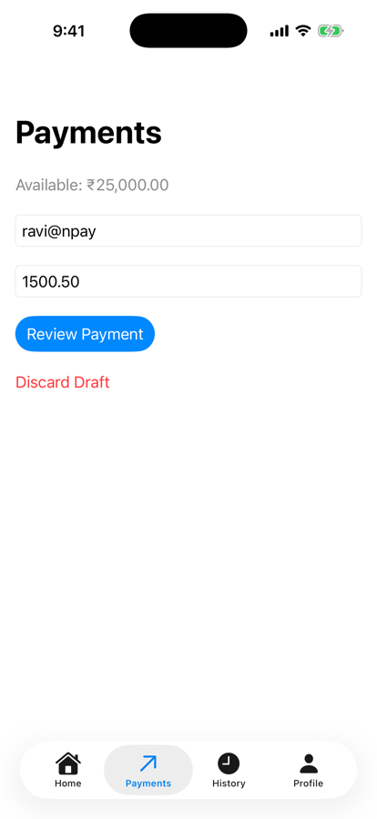
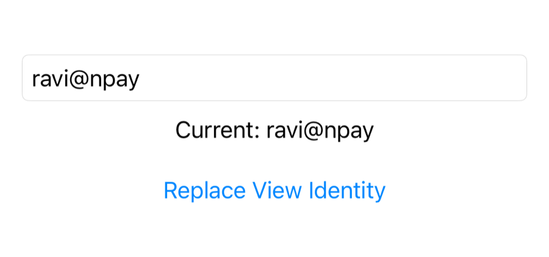
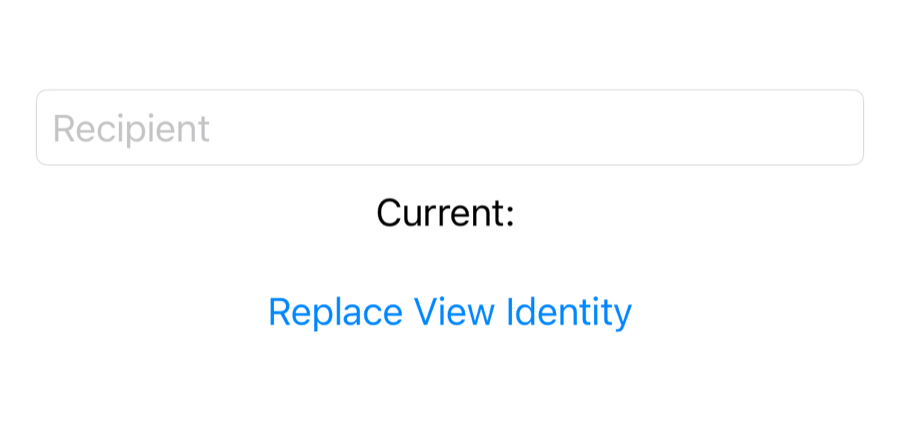
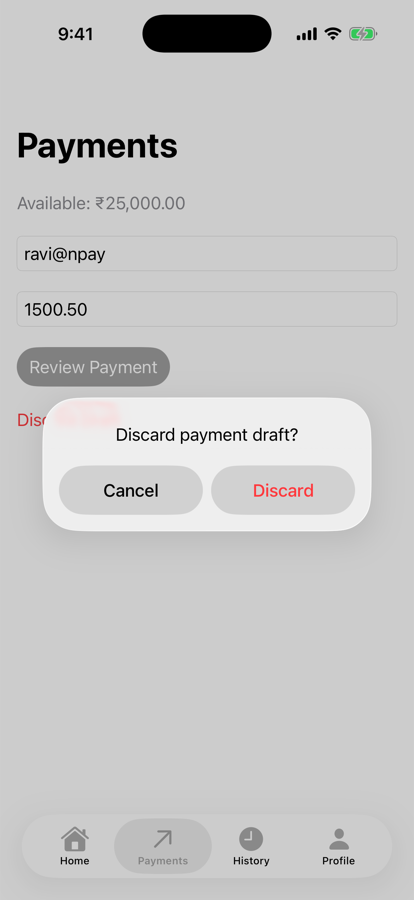
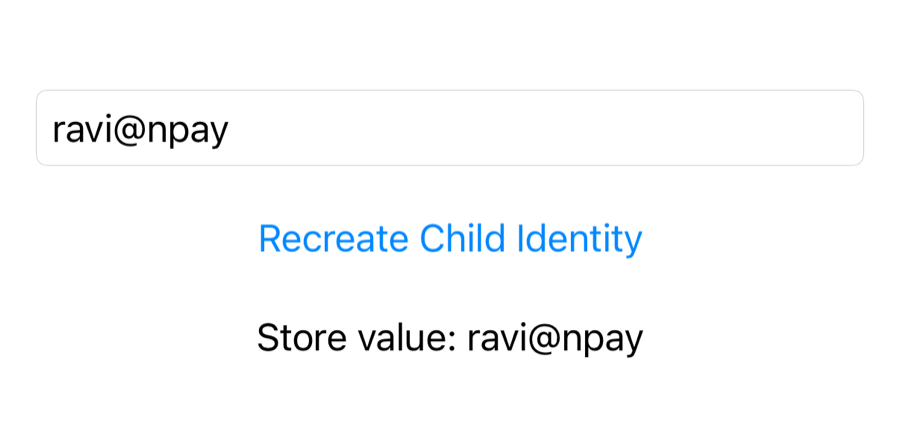

Unit 03 · Lesson 3.5
State Preservation
Across Navigation
A half-typed payment should survive a trip to History and a dismissed review. Not by luck: by giving the draft an owner that lives long enough.
Lesson 3.5 · Outcomes
By the end, you will be able to explain
Separate a view’s value, its identity and its state
Predict when local @State resets, and force it with .id()
Model a draft separately from a payment request
Move the draft into NPayStore; edit it with @Bindable
Decide when a draft is cleared
Tell preservation from persistence; pick each state’s owner
Lesson 3.5 · Where we are
Today: a draft that survives on purpose
Unit 03 · Advanced SwiftUI & Navigation
Part 1
The milestone
Don’t lose the user’s input
Part 1 · Our NPay milestone (section 1)
Should the input disappear? No.
- Keep the draft until a successful payment
- Or until the user discards it
- Preservation depends on ownership and identity
- Not on whether a screen is visible

Draft typed

After History
Part 2
Local @State
Works, until the screen is replaced
Part 2 · First experiment: local @State (section 2)
Kept across tabs; lost when replaced
struct PaymentsScreen: View {
@State private var recipient = ""
@State private var amountText = ""
var body: some View {
VStack {
TextField("Recipient", text: $recipient)
TextField("Amount", text: $amountText)
}
.padding()
}
}typed: "ravi@npay"
after History and back: "ravi@npay"
typed: "ravi@npay"
after replacing the screen and back: ""
- A stable TabView kept the state (as in 3.3)
- Removed from the hierarchy, a new identity: reset
- A draft that must survive needs a longer-lived owner
Part 3
Value, identity, state
Three concepts, never confused
Part 3 · View identity versus view value (section 3)
A new struct is not a new identity
- Views are value types, recreated freely
@Statesurvives while the identity does
- An editor whose
initprints - Type ravi@npay; re-render the parent twice
TracedEditor.init (a new view value)
[Re-render Parent]
TracedEditor.init (a new view value)
[Re-render Parent]
TracedEditor.init (a new view value)
field: "ravi@npay"
Part 3 · Force a state reset with .id() (section 4)
New identity, new state
struct IdentityLab: View {
@State private var identity = UUID()
var body: some View {
VStack(spacing: 20) {
DraftEditor()
.id(identity)
Button("Replace View Identity") {
identity = UUID()
}
}
.padding()
}
}
struct DraftEditor: View {
@State private var recipient = ""
var body: some View {
VStack {
TextField("Recipient", text: $recipient)
.textFieldStyle(.roundedBorder)
Text("Current: \(recipient)")
}
}
}
Typed: Current: ravi@npay

After Replace View Identity
Part 3 · Unstable identity (section 4)
.id(UUID()) in body: state dies on every update
DraftEditor()
.id(UUID()) // a new identity on every evaluation
Text("Taps: \(taps)")
Button("Count Tap") { taps += 1 }typed: "ravi@npay"
[Count Tap]: an unrelated state change
field: ""
- Random IDs generated during
body - Any re-evaluation becomes a new view: input lost
Part 4
A draft model
Input, kept as input
Part 4 · Create a payment draft model (section 5)
A draft is not a payment request
struct PaymentDraft {
var recipient: String = ""
var amountText: String = ""
}- Mid-typing values like
"1500."must be allowed - Parse only when reviewing (2.11, 2.12)
| Draft | Payment request |
|---|---|
| Incomplete user input | Validated domain data |
amountText: String | amountPaise: Int |
| Can be invalid | Valid by construction |
| Edited freely | Immutable once made |
- Different types, different jobs
Part 4 · Two lessons, one name (sections 5, 17)
PaymentDraft twice does not compile
struct PaymentDraft: Identifiable { // 3.4: the review
let id = UUID()
let recipient: String
let amountPaise: Int
}
struct PaymentDraft { // 3.5: the input
var recipient: String = ""
var amountText: String = ""
}| Type (our names) | Is |
|---|---|
PaymentDraft | editable input, in the store (3.5) |
PaymentReview | immutable snapshot for the sheet (3.4’s type, renamed) |
- The review shows a snapshot, not the live draft
Part 4 · Where should the draft live? (sections 6, 11)
In the store the root owns
@MainActor
@Observable
final class NPayStore {
var balancePaise = 2_500_000
var transactions: [Transaction] = []
var paymentDraft = PaymentDraft()
func clearPaymentDraft() {
paymentDraft = PaymentDraft()
}
// recordDemoPayment(recipient:amountPaise:) as in 3.3
}- As long as the root’s store: tab switches, screen recreation
- Draft = editing state; payment = behaviour
- Split into ViewModels and use cases in Unit 4
Part 5
@Bindable
Bindings into an observable object
Part 5 · Connect the draft using @Bindable (section 7)
$store.paymentDraft.recipient
struct PaymentsScreen: View {
@Bindable var store: NPayStore
var body: some View {
VStack(spacing: 16) {
TextField("Recipient",
text: $store.paymentDraft.recipient)
TextField("Amount",
text: $store.paymentDraft.amountText)
}
.textFieldStyle(.roundedBorder)
.padding()
}
}| Wrapper | Role |
|---|---|
@Observable | the class takes part in Observation |
@State | owns it (NPayRootView) |
@Bindable | gives bindings to its properties |
- The screen receives the store
- Internals: Unit 4
Part 5 · What happens when the user types? (section 8) · conceptual
Six stages, one keystroke
Draft changed: Old: "" New: "r"
Draft changed: Old: "r" New: "ra"
…
Draft changed: Old: "ravi@npa" New: "ravi@npay"
Part 6
When to clear
An explicit rule
Part 6 · When should we clear the draft? (section 9)
Two events clear it; nothing else does
| Event | Draft |
|---|---|
| Switching tabs | preserve |
| Dismissing the review sheet | preserve |
| Navigating to History | preserve |
| Successful demo payment | clear |
| Discard Draft | clear |
func clearPaymentDraft() {
paymentDraft = PaymentDraft()
}- After the payment is recorded
- When the user confirms Discard
- Dismissing may mean “let me fix the amount”
- Clearing then loses useful input
Part 6 · Xcode experiments (sections 12, 18)
The diagnostic fires only on the events that matter
1. type ravi@npay, 1500 → 9 × Draft changed
2-3. History and back → (nothing)
recipient "ravi@npay", amount "1500"
4-5. review, swipe down → (nothing)
recipient "ravi@npay", amount "1500"
6. confirm → Old: ravi@npay New: ""
7. back on Payments → recipient "", amount ""
Discard Draft → Discard → Old: ravi@npay New: ""

After paying

Discard Draft
Part 7
Preservation vs persistence
Alive is not saved
Part 7 · State preservation versus persistence (sections 10, 14)
Different mechanisms, different lifetimes
| Mechanism | Survives |
|---|---|
@State | while the view’s identity survives |
Shared NPayStore | while the store instance survives |
@SceneStorage | simple scene state, through supported restoration |
@AppStorage | simple values, via UserDefaults |
| SwiftData | structured records, local storage |
typed: "ravi@npay", "1500.50"
app terminated, launched again
after relaunch: "", ""
- Preservation: kept while the owner lives
- Persistence: recovered after owner or process is gone
- Recipient and amounts are financial data: privacy first (Unit 6, Unit 7)
Part 7 · Reset the child, preserve the draft (section 15)
Same .id() trick; this time nothing is lost
@MainActor @Observable
final class DraftStore { var recipient = "" }
struct DraftIdentityExperiment: View {
@State private var store = DraftStore()
@State private var identity = UUID()
var body: some View {
VStack(spacing: 20) {
DraftChild(store: store)
.id(identity)
Button("Recreate Child Identity") { identity = UUID() }
Text("Store value: \(store.recipient)")
}
.padding()
}
}
struct DraftChild: View {
@Bindable var store: DraftStore
var body: some View {
TextField("Recipient", text: $store.recipient)
.textFieldStyle(.roundedBorder)
}
}
After Recreate Child Identity
before: Store value: ravi@npay
[Recreate Child Identity]
after: Store value: ravi@npay
field: "ravi@npay"
Part 8
Choosing owners
As local as possible, as shared as necessary
Part 8 · Should every property go into NPayStore? (section 16)
No: decide by lifetime and sharing
| State | Recommended owner |
|---|---|
| Current balance | Shared NPayStore |
| Transaction collection | Shared NPayStore |
| Payment draft | Shared feature-level store |
| Review sheet visibility | PaymentsScreen |
| Focused text field | PaymentsScreen |
| Temporary animation state | The relevant component |
| Selected tab | NPayRouter |
| Navigation paths | NPayRouter |
- Keep state as local as possible
- but as shared as necessary
- Unnecessary coupling
- Every change touches everything
- A dedicated payment-flow model for the draft
Part 8 · Two screens, one draft (section 17)
Edit the draft; review a snapshot
Button("Review Payment") {
guard let amountPaise = parsedAmount else { return }
focusedField = nil
// an immutable snapshot of what the user is reviewing
review = PaymentReview(
recipient: store.paymentDraft.recipient,
amountPaise: amountPaise)
}
PaymentReviewSheet(review: review) {
// validate again against the current balance
if let id = store.recordDemoPayment(
recipient: review.recipient,
amountPaise: review.amountPaise) {
store.clearPaymentDraft() // recorded: the draft is done
pendingSuccessID = id
} else {
paymentFailed = true
}
self.review = nil
}- Who owns the editing workflow?
- Should edits appear in both at once?
- What if the draft is discarded?
- Can a review show stale values?
- Review = immutable snapshot at open
- Confirm re-validates against the current balance
- Editable draft ≠ confirmed input
Part 8 · Final NPay architecture (section 19)
Two owned objects; one draft, edited in place
| Checkpoint | In the simulator |
|---|---|
| Draft across tab switches | kept |
| Draft across review dismissal | kept |
| Draft after a recorded payment | cleared |
| Draft after relaunch | gone: in memory only |
Lesson 3.5 · Recap
What to remember
Identity owns state
new values keep it; a new identity resets it
Give drafts an owner
store + @Bindable; clear when paid or discarded
Preserved is not persisted
in memory dies with the process
Review
Check your understanding
Check your understanding · 1 of 9
Does recreating a SwiftUI view struct necessarily reset its @State?
Three new TracedEditor values; the field still said ravi@npay.
Common trap: Confusing a view value with its identity.
Check your understanding · 2 of 9
What can changing a view’s explicit .id() cause?
- Automatic persistence
- A state identity reset
- A new iOS process
IdentityLab: Replace View Identity emptied the field.
Common trap: Thinking .id is only for lists.
Check your understanding · 3 of 9
Why place the NPay payment draft in a shared store?
- To encrypt it automatically
- To create a new thread
- To give it a lifetime beyond one screen
The root owns the store; the draft outlives screen changes.
Common trap: Expecting the store to add security.
Check your understanding · 4 of 9
What does @Bindable provide?
- Bindings to mutable observable properties
- Database persistence
- Background execution
$store.paymentDraft.recipient for a TextField.
Common trap: Thinking @Bindable owns the object.
Check your understanding · 5 of 9
Should dismissing the review sheet automatically erase the payment draft?
Dismissal may mean “let me fix it”; our swipe-down left the draft intact.
Common trap: Clearing on every exit.
Check your understanding · 6 of 9
Does an in-memory NPayStore automatically survive app termination?
After a relaunch the fields were empty.
Common trap: Treating preservation as persistence.
Check your understanding · 7 of 9
A parent shows DraftEditor().id(UUID()) and a counter. The user types ravi@npay, then taps the counter. What does the field show?
- ravi@npay
- Nothing: it reset
- The counter value
The re-evaluated body made a new UUID, so a new identity.
Common trap: Thinking .id(UUID()) is harmless.
Check your understanding · 8 of 9
DraftChild edits a parent-owned DraftStore through @Bindable. Its .id is replaced. What does the field show?
- ravi@npay
- Empty
- A compile error
The value lives in the store, not the child: “Store value: ravi@npay”.
Common trap: Assuming any .id change loses data.
Check your understanding · 9 of 9
From Lesson 3.4: what makes sheet(item: $review) present?
reviewbecoming non-nil- A navigation path change
- A Bool named isPresented
An optional Identifiable item: nil means no sheet.
Common trap: Mixing presentation with navigation.
Lesson 3.5 · Where this goes next
Where this goes next
| Lesson | Topic | Builds on today |
|---|---|---|
| 3.6 | SwiftUI animations & transitions | balance updates, confirmation, success feedback; identity in animation |
| Unit 4 | ViewModels, use cases, Observation internals | a payment-flow model owns the draft |
| Unit 6 | Persistence | drafts that survive a relaunch, with privacy in mind |
Lesson 3.5 · Lab
A draft that survives on purpose
Move the draft into the store; prove each lifetime.
- Run IdentityLab and DraftIdentityExperiment.
- Add
PaymentDraft; rename 3.4’s toPaymentReview. - Store +
@Bindable; addclearPaymentDraft(). - Add the onChange diagnostic; run experiments 1–7.
- Add Discard Draft with a confirmation.
- Relaunch: what survives?
- Your diagnostic log for experiments 1–7
- Your owner table for NPay’s state
- One sentence: preservation vs persistence
Lesson 3.5 complete
State Preservation
Across Navigation
Next: Lesson 3.6 — SwiftUI Animations & Transitions